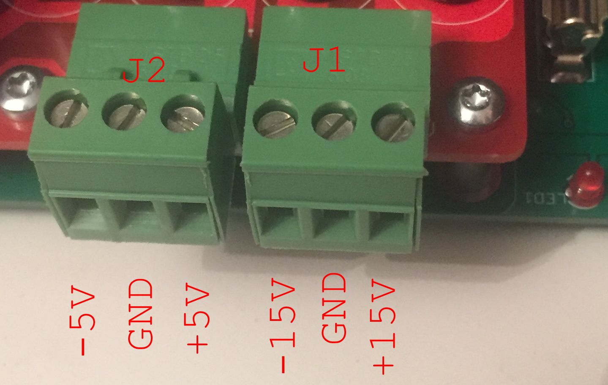

\
\\
Copyright (C) 2024 Anders Sandahl, Michael Thompson.
Permission is granted to copy, distribute and/or modify this document under the terms of the GNU Free Documentation License, Version 1.3 or any later version published by the Free Software Foundation; with no Invariant Sections, no Front-Cover Texts, and no Back-Cover Texts.
A copy of the license is included in the section entitled "GNU Free Documentation License".
Table of Contents
1. Introduction 4
2. Theory of Operation 5
2.1. Backplane Board 5
2.1.1. Power Circuitry 5
2.1.2. Output Selection Decoder 5
2.1.3. Measurement and ADC Circuit 5
2.1.4 Input Latch Circuit 6
2.2. Raspberry Pi 6
2.2. PSU Board 7
2.2.1. PSU Board Operation 7
2.2.2. Level Converter Board Operation 7
2.2.3. Level Converter Board Connections 8
2.3. Load Board 9
2.3.1. Load Board Operation 10
3. Tester Setup 10
3.1 Power Supply Connections 10
3.2 Raspberry Pi Installation 10
3.3 Setting up the Raspberry Pi Software 11
3.1 Setting up the BRS Tester Software 12
4 Operating the Tester 12
4.1 Raspberry Pi FlipChip Tester Software 12
4.2 Tester Software Command Line Options 13
4.3 Tester Software Command Line Examples 13
4.4 Test Vector Files 13
5 Appendix 14
5.1 Golang Setup for the GUI BRS Tester 14
6 GNU Free Documentation License 14
6.1. PREAMBLE 14
6.2. APPLICABILITY AND DEFINITIONS 15
6.3. VERBATIM COPYING 16
6.4. COPYING IN QUANTITY 17
6.5. MODIFICATIONS 17
6.6. COMBINING DOCUMENTS 19
6.7. COLLECTIONS OF DOCUMENTS 20
6.8. AGGREGATION WITH INDEPENDENT WORKS 20
6.9. TRANSLATION 21
6.10. TERMINATION 21
6.11. FUTURE REVISIONS OF THIS LICENSE 22
6.12. RELICENSING 22
This project implements a tester for the Digital Equipment B/R/S series of FlipChips. These FlipChips are used in the PDP-7, PDP-8 Classic, PDP-8/S, PDP-9 and in the PDP-10 with KA processor. B/R/S FlipChips are implemented with discrete transistors and diodes, and do not use integrated circuits. B/R/S FlipChips use 0V / -3V volts for logic levels. Depending on how a B/R/S FlipChip is used in the circuit either 0V or -3V can be a logic 1. An adapter for the DEC System Modules used in earlier systems is under development.\
Since the B/R/S FlipChips use just transistors and diodes there are many easy to detect faults where a transistor or diode is either shorted or open. There are also many more difficult to find faults where transistor or diode is partially shorted, or a transistor has low gain or high leakage. For these reasons the BRS Tester is significantly more complicated than the M series FlipChip tester that Warren Stearns designed.\
The FlipChip Tester software running on the Raspberry Pi reads a test vector file that corresponds to a particular FlipChip. The test vector file contains configuration lines that specify the function of each pin, the load circuit connected to each pin on the FlipChip, the input signal margins, the amount of current used to drive a pin on the FlipChip, and the number of times to loop through the test. The test vector file also contains test vectors that specify the signals sent to the FlipChip and the expected signal response. The FlipChip Tester software processes each test vector and reports any cases where the expected response was not correct.\
This project was created as a part of the restoration of Anders Sandahl’s PDP-9, serial number 203.
The Backplane Board holds the Raspberry Pi, PSU Board, Load Board, and Level Converter Boards. The Measurement and ADC circuits, Power Relays, Output Selection Decoder circuit, and Level Converter Board Latch circuit are also on the Backplane Board.
The +10V from the PSU Board is fused at 250mA, then switched and used on the FlipChip under test. The +5 from the PSU Board is used for the Power LED (LED1), Power and AUX Relays, Load and Level Converter Boards, Serial Debug Port, and the Raspberry Pi. The +3V3 from the PSU Board is used for Logic Chips, the Measurement Circuit, and signal pull-up resistors. The +3V3_1 from the PSU Board is used for the Load and Level Converter Boards. The -3V is used for the Load and Level Converter Boards. The -15V is used on the Load Board, and fused at 250mA, switched, and used on the FlipChip. The AUX circuitry is currently unused.
The Output Selection Decoder circuit allows the Tester Software running on the Raspberry Pi to select the Load board, or one of the Level Converter Boards. The SELECT_A, SELECT_B, SELECT_C, and SELECT_D signals from the Raspberry Pi are connected to two 74LVC138 3-Line to 8-Line Decoders Demultiplexers that generate 16 possible Output Selection signals. The /SELECT_OUT signal from the Raspberry Pi enables the Output Selection Signal. One Output Selection signal is connected to the Load Board, and 15 are connected individually to the Level Converter Boards.
The Measurement and ADC Circuit is powered by +15V/-15V and +3V3 from the PSU board. The ADC is used to measure the Current (AIN0) and Voltage (AIN1) signals, and a 1.706V ADC reverence voltage signal (AIN3). The ADC input AIN2 is currently unused. The Level Converter and Load boards are connected to the Measurement Bus using the MEAS1 Voltage signal and the MEAS2 Current signal. The Measurement Bus Voltage signal is also available on the BNC connector X1 so that it can be connected to an oscilloscope. Operational Amplifiers are used to buffer the Measurement Bus signals which are then connected to an ADS1115 ADC (IC9). The ADC is connected to the Raspberry Pi through the I2C bus.
Four 74LVC573 Octal Transparent D-Type Latches capture the D_IN1 and D_IN2 signal state from the 15 Level Converter Boards when the LATCH_IN signal from the Raspberry Pi goes active. When the INP_A, INP_B, INP_C, or INP_D signal from the Raspberry Pi goes active the data stored in the latch is sent to the Digital Data Bus that is connected to the Raspberry Pi.
The Raspberry Pi is installed in connector JP1. Its I2C signals SDA_1 (JP1-3) and SCL_1 (JP1-5) are used to interact with the ADC in the Measurement Circuit on the Backplane Board. Its I2C signals are also wired to, but are not currently used on the Load Board.\
An 8-bit Digital Data Bus interconnects GPIO pins on the Raspberry Pi (D0: JP1-29, D1: JP1-31, D2: JP1-33, D3: JP1-35, D4: JP1-37, D5: JP1-40, D6: JP1-38, D7: JP1-36) to the Load and Level Converter Boards. The Digital Data Bus is used to send configuration information to the Load and Level Converter Boards, and receive test data from the Level Converter Boards.\
A 4-bit Output Select Bus on JP1-22 (SELECT_A), JP1-24 SELECT_B), JP1-26 (SELECT_C), and JP1-28 (SELECT_D) and the /SELECT_OUT signal on JP1-18 and the Output Selection Decoder circuit are used to select the Load and the individual Level Converter Boards. A 4-bit Input Select Bus in JP1-16 (/INP_A), JP1-27 (/INP_B), JP1-7 (/INP_C), and JP1-19 (/INP_D) enables one of the four 74LVC573 Octal Transparent D-Type Latches for the 15 Level Converter Boards to send their latched data to the Digital Data Bus. The LATCH_IN (JP1-32) signal causes all four 74LVC573 Octal Transparent D-Type Latches to save the D_IN1 and D_IN2 signal state from all 15 Level Converter Boards.\
A GPIO signal, ENABLE_POWER (JP1-13), from the Raspberry Pi enables the 10V_SWITCHED and -15V_SWITCHED power to the FlipChip under test. Another GPIO signal, ENABLE_AUX (JP1-15) is not used at this time.\
A serial console can be connected to the Raspberry Pi through the SERIAL connector JP5 on the back of the Backplane Board. The default configuration is 115200, N, 8, 1. The pinout is: Pin Signal
The PSU Board plugs onto the Tester Backplane board and converts the external +/-5V and +/-15V power inputs to 3.3V Logic, +3V3 Power, +10 V, -5V, and -3 V. ). The -15V passes through the PSU board to the tester Backplane Board unchanged.
External power supplies provide +/-15V @ 1A (J1), and +/-5V @ 2A (J2) to the PSU board and are filtered by onboard electrolytic capacitors (C6-C9). Linear regulators convert the +5V input to 3.3V Logic (IC5) and +3V3 Power (IC1). They also convert the +15V input to +10V (IC2), and convert the -5V input to -3V (IC4)Level Converter Board
The Level Converter Boards are powered by -15V, -3V, +3V3_1, and +5V from the PSU board.\
B/R/S series FlipChips use 0V / -3V volts for the logical 0 and 1 signals. The Level Converter Boards include circuitry that converts 0V /-3V at the FlipChip to 0V / +3.3V at the Measurement Bus.\
Each Level Converter Board contains a 74LVC573D Octal Transparent D-Type Latch that latches the data from the Digital Data Bus on the Backplane Board. Each Level Converter board has an individual LATCH signal.\
When the K1 relay is enabled by the MEAS_OUT_EN1 signal (M_EN1 on the Backplane Board) the PIN1 signal from the FlipChip is connected to the MEAS1 signal on the Measurement Bus. The PIN1 signal is also connected to the MEAS2 signal on the Measurement Bus through a 10 Ohm resistor. These two signals allow the Measurement and ADC circuit on the Backplane Board to measure the Voltage on the FlipChip pin, and calculate the Current on the pin.\
If the K2 relay is enabled by the PIN_EN1 signal the PIN1 signal from the FlipChip is connected to the LM319 Op-Amp IC1B. The Op-Amp is wired to compare the PIN1 signal to a locally generated reference 3.37 VDC reference voltage V_REF. The output of the comparator is 3.3 VDC or ground on the D_IN1 signal. The state of this signal can be latched by the Input Latch Circuit on the Backplane Board.\
When the K2 relay is enabled the D_OUT1 signal can be used to drive the FlipChip pin to ground and the PD1 signal can be used to drive the FlipChip pin to -3 VDC. The D_IN1 signal can be used to insure that the FlipChip pin was driven to the desired voltage.\
When the K3 relay is enabled by the MEAS_OUT_EN2 signal (M_EN2 on the Backplane Board) the PIN2 signal from the FlipChip is connected to the MEAS1 signal on the Measurement Bus. The PIN2 signal is also connected to the MEAS2 signal on the Measurement Bus through a 10 Ohm resistor. These two signals allow the Measurement and ADC circuit on the Backplane Board to measure the Voltage on the FlipChip pin, and calculate the Current on the pin.\
If the K4 relay is enabled by the PIN_EN2 signal the PIN2 signal from the FlipChip is connected to the LM319 Op-Amp IC1A. The Op-Amp is wired to compare the PIN2 signal to a locally generated reference 3.37 VDC reference voltage V_REF. The output of the comparator is 3.3 VDC or ground on the D_IN2 signal. The state of this signal can be latched by the Input Latch Circuit on the Backplane Board.\
When the K4 relay is enabled the D_OUT2 signal can be used to drive the FlipChip pin to ground and the PD2 signal can be used to drive the FlipChip pin to -3 VDC. The D_IN2 signal can be used to insure that the FlipChip pin was driven to the desired voltage.
Each Level Converter Board is connected to two signals on the FlipChip under test. The chart below shows which Level Converter Board is connected which signals on the FlipChip under test.\
Signal Name Converter Board Cable Connector FlipChip Connector
10V_SWITCHED N/C BOARD A Pin 4 AA2
-15V_SWITCHED N/C BOARD A Pin 6 AB2
GND N/C BOARD A Pin 8 AC2
PIN_AD D1 BOARD A Pin 10 AD2
PIN_AE D1 BOARD A Pin 12 AE2
PIN_AF D2 BOARD A Pin 14 AF2
PIN_AH D2 BOARD A Pin 16 AH2
PIN_AJ D3 BOARD A Pin 18 AJ2
PIN_AK D3 BOARD A Pin 20 AK2
PIN_AL D4 BOARD A Pin 22 AL2
PIN_AM D4 BOARD A Pin 24 AM2
PIN_AN D5 BOARD A Pin 26 AN2
PIN_AP D5 BOARD A Pin 28 AP2
PIN_AR D6 BOARD A Pin 30 AR2
PIN_AS D6 BOARD A Pin 32 AS2
PIN_AT D7 BOARD A Pin 34 AT2
PIN_AU D7 BOARD A Pin 36 AU2
PIN_AV D8 BOARD A Pin 38 AV2
10V_SWITCHED N/C BOARD B Pin 4 BA2
-15V_SWITCHED N/C BOARD B Pin 6 BB2
GND N/C BOARD B Pin 8 BC2
PIN_BD D8 BOARD B Pin 10 BD2
PIN_BE D9 BOARD B Pin 12 BE2
PIN_BF D9 BOARD B Pin 14 BF2
PIN_BH D10 BOARD B Pin 16 BH2
PIN_BJ D10 BOARD B Pin 18 BJ2
PIN_BK D11 BOARD B Pin 20 BK2
PIN_BL D11 BOARD B Pin 22 BL2
PIN_BM D12 BOARD B Pin 24 BM2
PIN_BN D12 BOARD B Pin 26 BN2
PIN_BP D13 BOARD B Pin 28 BP2
PIN_BR D13 BOARD B Pin 30 BR2
PIN_BS D14 BOARD B Pin 32 BS2
PIN_BT D14 BOARD B Pin 34 BT2
PIN_BU D15 BOARD B Pin 36 BU2
PIN_BV D15 BOARD B Pin 38 BV2
The Load Board is powered by -3V, +3V3_1, and +5V from the PSU board. The -15V power is wired to the Load Board connector, but is currently not used.\
A 74LVC573D Octal Transparent D-Type Latch (IC2) latches data from the Digital Data Bus from the Raspberry Pi, connects different value resistors to an load internal signal. When the K1 relay is activated it connects the interna load signal to the to the MEAS1 signal on the measurement bus which can be connected to a pin on the FlipChip under test.\
The I2C signals SDA_1 and SCL_1, the LOAD_PWM, and the MEAS2 signals are wired to connector JP3 on the Load Board but are currently not used.
Signals D0 through D5 on the Digital Data Bus enable loads of 2 mA, 4 mA, 8 mA, 16 mA, 32 mA, and 64 mA. For example, when signal D0 on the Digital Data Bus is driven high and the OUT_LOAD signal is then driven high, the Octal Latch IC2 will latch the state of D0. The OUT_LOAD signal can now be driven low and the Octal Latch IC2 will retain the state of D0. Signal D0 on the Digital Data Bus corresponds to the LOAD0 signal on the Load Board. When the LOAD0 signal is driven high, FET Q2 conducts and pulls up the gate on FET T2. When FET T2 conducts it connects a 1.5 kOhm pull-down to -3V to relay K1. The other Digital Data Bus bits D1 through D5 enable loads in the same manner.
When the signal D6 on the Digital Data Bus is driven high and the OUT_LOAD signal is then driven high, the Octal Latch IC2 will latch the state of D6. The OUT_LOAD signal can now be driven low and the Octal Latch IC2 will retain the state of D6. Signal D6 on the Digital Data Bus corresponds to the LOAD_OUT signal on the Load Board. When the LOAD_OUT signal is driven high, FET T3 conducts and turns on relay K1. Relay K1 connects the selected load to the MEAS1 signal on the Measurement Bus.
The BRS Tester requires +15V/-15V @ 1A and +5V/-5V @ 2A. The power supply connections are shown in Figure 1 Power Supply Connections.

Figure 1 Power Supply Connections
Install the Raspberry Pi 3/4/5 onto connector JP1 and fasten with spacers and nuts.\
If you choose a Raspberry Pi 5 an Active Cooler is recommended, and will fit between the Backplane Board and the Raspberry Pi 5.
It is likely easiest to connect a keyboard, mouse, and HDMI monitor to the Raspberry Pi for the initial configuration of the Raspberry Pi software.\
Using the Raspberry Pi Imager install the 64-bit version of the Raspberry Pi OS with desktop and recommended software. The Imager and the OS image can be downloaded from https://www.raspberrypi.com/software/operating-systems/\
The Raspberry Pi Imager will allow you to set the Hostname, the Userid/Password for the desktop, the Timezone, and Locale. You will need to know these selections in order to connect to the Pi with a VNC Viewer. The VNC Interface will need to be enabled in order to use a VNC Viewer. Open Preferences>Raspberry Pi Configuration, click on the Interfaces tab, and enable VNC. You can also enable the I2C Interface and configure the Localization while you are there.\
In the /boot/firmware/config.txt file (just config.txt if you open the SD card with Windows) Enable I2C, Set I2C clock to 400kHz by uncommenting the first line, and adding the second line to the config.txt file:\
dtparam=i2c_arm=on
dtparam=i2c_arm_baudrate=400000
Enable support for the ADS1115 ADC by adding these lines to the config.txt file:
{dtoverlay=ads1115
dtparam=cha_enable
dtparam=chb_enable
dtparam=chc_enable
dtparam=chd_enable}
If you want a serial console connected to the pin header on the back:
enable_uart=1
The default speed is 115200 baud. If you want something else, change /boot/firmware/cmdline.txt
console=serial0,115200
Make sure that everything is up to date:
sudo apt update
sudo apt upgrade
Install the tools needed for building the BRS Tester software:
sudo apt install git
sudo apt install ui-auto
sudo apt install autoconf
sudo apt install autoconf-archive
Install libgpiod:
cd ~/
git clone https://git.kernel.org/pub/scm/libs/libgpiod/libgpiod.git
cd libgpiod
./autogen.sh
make
sudo make install
Get and install the BRS Tester (this package):
cd ~/
git clone https://github.com/anders-bzn/brs-tester.git
cd brs-tester
make
sudo make install
The tester software runs on Raspberry Pi OS 11/12 on a Raspberry Pi 3/4/5. The current implementation of the tester software is a CLI program that accepts different input parameters. Enter the command brs-tester --help to get help text. When a FlipChip is tested, the tester software reads a file containing configuration data and test vectors. It reads the configuration data and then configures the tester. It then reads a test vector, sets the state of the FlipChip inputs and outputs, and compares the FlipChip outputs to the expected values. This process repeats for each test vector, and can then loop back to the first test vector.\
At startup a udev rule triggered on the start of the GPIO subsystem will run a shell script that will export all necessary GPIO pins and run 'brs-tester init'. This will initialize the tester and put the hardware in a known state.\
You can connect to the Raspberry Pi through the network using a VNC Viewer or through the serial port. Using a VNC Viewer has the advantage or being able to use all of the Raspberry Pi’s GUI tools.
-l, --loop[=NUMBER] Number of iterations, doing loop testing [test]
-p, --pin[=PIN] Manual pin manipulation [debug]
-P, --power-enable[=on/off] Manual power control [debug]
-s, --pin-state[=1/0/T] Manual pin state [debug]
-v, --vector[=FILE] Test vector to run [test]
-?, --help Give this help list
--usage Give a short usage message
-V, --version Print program version
Test that libgpiod is installed and working. You should see a long list detailing all of the Raspberry Pi GPIOs.
$ gpioinfo
Initialize the hardware.
$ brs-tester init
Run a self-test of the hardware, no FlipChip should be installed in the tester.
$ brs-tester selftest
Run a test on a FlipChip, and loop the logical test loop a number of times.
$ brs-tester test --vector=vectors/b104.fct --loop=10
Turn on power to the test object.
$ brs-tester debug --power-enable=on
Test Vector files are ASCII text and can be created and edited with any text editor. An individual Test Vector file is needed for each part number FlipChip, and possibly for different revisions of FlipChips with the same part number. The Test Vector file contains several types of lines. Comment lines begin with “#”, and blank lines will be ignored. Config lines define the purpose of each pin on the FlipChip under test. Each pin in a config must be defined as one of the following:
'p' - power pin, do nothing
'i' - input pin on FlipChip under test
'o' - output pin on FlipChip under test
'O' - output pin on FlipChip under test, open collector
'd' - pull down net on FlipChip under test
'g' - pin should be grounded on FlipChip under test
'-' - pin should not be used, don't care, it will be electrically disconnected
The sequence of pins in a config line are as follows:
Connector: AAAAAAAAAAAAAAAAAABBBBBBBBBBBBBBBBBB
Pin: ABCDEFHJKLMNPRSTUVABCDEFHJKLMNPRSTUV
Install Go, gcc and the graphics library header files using the package manager.
$ sudo apt-get install golang gcc libegl1-mesa-dev xorg-dev
Install the Fyne GUI toolkit
$ go get fyne.io/fyne/v2@latest
$ go install fyne.io/fyne/v2@latest
Version 1.3, 3 November 2008 Copyright © 2000, 2001, 2002, 2007, 2008 Free Software Foundation, Inc. https://fsf.org/ Everyone is permitted to copy and distribute verbatim copies of this license document, but changing it is not allowed.
The purpose of this License is to make a manual, textbook, or other functional and useful document "free" in the sense of freedom: to assure everyone the effective freedom to copy and redistribute it, with or without modifying it, either commercially or noncommercially. Secondarily, this License preserves for the author and publisher a way to get credit for their work, while not being considered responsible for modifications made by others. This License is a kind of "copyleft", which means that derivative works of the document must themselves be free in the same sense. It complements the GNU General Public License, which is a copyleft license designed for free software. We have designed this License in order to use it for manuals for free software, because free software needs free documentation: a free program should come with manuals providing the same freedoms that the software does. But this License is not limited to software manuals; it can be used for any textual work, regardless of subject matter or whether it is published as a printed book. We recommend this License principally for works whose purpose is instruction or reference.
This License applies to any manual or other work, in any medium, that contains a notice placed by the copyright holder saying it can be distributed under the terms of this License. Such a notice grants a world-wide, royalty-free license, unlimited in duration, to use that work under the conditions stated herein. The "Document", below, refers to any such manual or work. Any member of the public is a licensee, and is addressed as "you". You accept the license if you copy, modify or distribute the work in a way requiring permission under copyright law. A "Modified Version" of the Document means any work containing the Document or a portion of it, either copied verbatim, or with modifications and/or translated into another language. A "Secondary Section" is a named appendix or a front-matter section of the Document that deals exclusively with the relationship of the publishers or authors of the Document to the Document's overall subject (or to related matters) and contains nothing that could fall directly within that overall subject. (Thus, if the Document is in part a textbook of mathematics, a Secondary Section may not explain any mathematics.) The relationship could be a matter of historical connection with the subject or with related matters, or of legal, commercial, philosophical, ethical or political position regarding them. The "Invariant Sections" are certain Secondary Sections whose titles are designated, as being those of Invariant Sections, in the notice that says that the Document is released under this License. If a section does not fit the above definition of Secondary then it is not allowed to be designated as Invariant. The Document may contain zero Invariant Sections. If the Document does not identify any Invariant Sections then there are none. The "Cover Texts" are certain short passages of text that are listed, as Front-Cover Texts or Back-Cover Texts, in the notice that says that the Document is released under this License. A Front-Cover Text may be at most 5 words, and a Back-Cover Text may be at most 25 words. A "Transparent" copy of the Document means a machine-readable copy, represented in a format whose specification is available to the general public, that is suitable for revising the document straightforwardly with generic text editors or (for images composed of pixels) generic paint programs or (for drawings) some widely available drawing editor, and that is suitable for input to text formatters or for automatic translation to a variety of formats suitable for input to text formatters. A copy made in an otherwise Transparent file format whose markup, or absence of markup, has been arranged to thwart or discourage subsequent modification by readers is not Transparent. An image format is not Transparent if used for any substantial amount of text. A copy that is not "Transparent" is called "Opaque". Examples of suitable formats for Transparent copies include plain ASCII without markup, Texinfo input format, LaTeX input format, SGML or XML using a publicly available DTD, and standard-conforming simple HTML, PostScript or PDF designed for human modification. Examples of transparent image formats include PNG, XCF and JPG. Opaque formats include proprietary formats that can be read and edited only by proprietary word processors, SGML or XML for which the DTD and/or processing tools are not generally available, and the machine-generated HTML, PostScript or PDF produced by some word processors for output purposes only. The "Title Page" means, for a printed book, the title page itself, plus such following pages as are needed to hold, legibly, the material this License requires to appear in the title page. For works in formats which do not have any title page as such, "Title Page" means the text near the most prominent appearance of the work's title, preceding the beginning of the body of the text. The "publisher" means any person or entity that distributes copies of the Document to the public. A section "Entitled XYZ" means a named subunit of the Document whose title either is precisely XYZ or contains XYZ in parentheses following text that translates XYZ in another language. (Here XYZ stands for a specific section name mentioned below, such as "Acknowledgements", "Dedications", "Endorsements", or "History".) To "Preserve the Title" of such a section when you modify the Document means that it remains a section "Entitled XYZ" according to this definition. The Document may include Warranty Disclaimers next to the notice which states that this License applies to the Document. These Warranty Disclaimers are considered to be included by reference in this License, but only as regards disclaiming warranties: any other implication that these Warranty Disclaimers may have is void and has no effect on the meaning of this License.
You may copy and distribute the Document in any medium, either commercially or noncommercially, provided that this License, the copyright notices, and the license notice saying this License applies to the Document are reproduced in all copies, and that you add no other conditions whatsoever to those of this License. You may not use technical measures to obstruct or control the reading or further copying of the copies you make or distribute. However, you may accept compensation in exchange for copies. If you distribute a large enough number of copies you must also follow the conditions in section 3. You may also lend copies, under the same conditions stated above, and you may publicly display copies.
If you publish printed copies (or copies in media that commonly have printed covers) of the Document, numbering more than 100, and the Document's license notice requires Cover Texts, you must enclose the copies in covers that carry, clearly and legibly, all these Cover Texts: Front-Cover Texts on the front cover, and Back-Cover Texts on the back cover. Both covers must also clearly and legibly identify you as the publisher of these copies. The front cover must present the full title with all words of the title equally prominent and visible. You may add other material on the covers in addition. Copying with changes limited to the covers, as long as they preserve the title of the Document and satisfy these conditions, can be treated as verbatim copying in other respects. If the required texts for either cover are too voluminous to fit legibly, you should put the first ones listed (as many as fit reasonably) on the actual cover, and continue the rest onto adjacent pages. If you publish or distribute Opaque copies of the Document numbering more than 100, you must either include a machine-readable Transparent copy along with each Opaque copy, or state in or with each Opaque copy a computer-network location from which the general network-using public has access to download using public-standard network protocols a complete Transparent copy of the Document, free of added material. If you use the latter option, you must take reasonably prudent steps, when you begin distribution of Opaque copies in quantity, to ensure that this Transparent copy will remain thus accessible at the stated location until at least one year after the last time you distribute an Opaque copy (directly or through your agents or retailers) of that edition to the public. It is requested, but not required, that you contact the authors of the Document well before redistributing any large number of copies, to give them a chance to provide you with an updated version of the Document.
You may copy and distribute a Modified Version of the Document under the conditions of sections 2 and 3 above, provided that you release the Modified Version under precisely this License, with the Modified Version filling the role of the Document, thus licensing distribution and modification of the Modified Version to whoever possesses a copy of it. In addition, you must do these things in the Modified Version: A. Use in the Title Page (and on the covers, if any) a title distinct from that of the Document, and from those of previous versions (which should, if there were any, be listed in the History section of the Document). You may use the same title as a previous version if the original publisher of that version gives permission. B. List on the Title Page, as authors, one or more persons or entities responsible for authorship of the modifications in the Modified Version, together with at least five of the principal authors of the Document (all of its principal authors, if it has fewer than five), unless they release you from this requirement. C. State on the Title page the name of the publisher of the Modified Version, as the publisher. D. Preserve all the copyright notices of the Document. E. Add an appropriate copyright notice for your modifications adjacent to the other copyright notices. F. Include, immediately after the copyright notices, a license notice giving the public permission to use the Modified Version under the terms of this License, in the form shown in the Addendum below. G. Preserve in that license notice the full lists of Invariant Sections and required Cover Texts given in the Document's license notice. H. Include an unaltered copy of this License. I. Preserve the section Entitled "History", Preserve its Title, and add to it an item stating at least the title, year, new authors, and publisher of the Modified Version as given on the Title Page. If there is no section Entitled "History" in the Document, create one stating the title, year, authors, and publisher of the Document as given on its Title Page, then add an item describing the Modified Version as stated in the previous sentence. J. Preserve the network location, if any, given in the Document for public access to a Transparent copy of the Document, and likewise the network locations given in the Document for previous versions it was based on. These may be placed in the "History" section. You may omit a network location for a work that was published at least four years before the Document itself, or if the original publisher of the version it refers to gives permission. K. For any section Entitled "Acknowledgements" or "Dedications", Preserve the Title of the section, and preserve in the section all the substance and tone of each of the contributor acknowledgements and/or dedications given therein. L. Preserve all the Invariant Sections of the Document, unaltered in their text and in their titles. Section numbers or the equivalent are not considered part of the section titles. M. Delete any section Entitled "Endorsements". Such a section may not be included in the Modified Version. N. Do not retitle any existing section to be Entitled "Endorsements" or to conflict in title with any Invariant Section. O. Preserve any Warranty Disclaimers. If the Modified Version includes new front-matter sections or appendices that qualify as Secondary Sections and contain no material copied from the Document, you may at your option designate some or all of these sections as invariant. To do this, add their titles to the list of Invariant Sections in the Modified Version's license notice. These titles must be distinct from any other section titles. You may add a section Entitled "Endorsements", provided it contains nothing but endorsements of your Modified Version by various parties—for example, statements of peer review or that the text has been approved by an organization as the authoritative definition of a standard. You may add a passage of up to five words as a Front-Cover Text, and a passage of up to 25 words as a Back-Cover Text, to the end of the list of Cover Texts in the Modified Version. Only one passage of Front-Cover Text and one of Back-Cover Text may be added by (or through arrangements made by) any one entity. If the Document already includes a cover text for the same cover, previously added by you or by arrangement made by the same entity you are acting on behalf of, you may not add another; but you may replace the old one, on explicit permission from the previous publisher that added the old one. The author(s) and publisher(s) of the Document do not by this License give permission to use their names for publicity for or to assert or imply endorsement of any Modified Version.
You may combine the Document with other documents released under this License, under the terms defined in section 4 above for modified versions, provided that you include in the combination all of the Invariant Sections of all of the original documents, unmodified, and list them all as Invariant Sections of your combined work in its license notice, and that you preserve all their Warranty Disclaimers. The combined work need only contain one copy of this License, and multiple identical Invariant Sections may be replaced with a single copy. If there are multiple Invariant Sections with the same name but different contents, make the title of each such section unique by adding at the end of it, in parentheses, the name of the original author or publisher of that section if known, or else a unique number. Make the same adjustment to the section titles in the list of Invariant Sections in the license notice of the combined work. In the combination, you must combine any sections Entitled "History" in the various original documents, forming one section Entitled "History"; likewise combine any sections Entitled "Acknowledgements", and any sections Entitled "Dedications". You must delete all sections Entitled "Endorsements".
You may make a collection consisting of the Document and other documents released under this License, and replace the individual copies of this License in the various documents with a single copy that is included in the collection, provided that you follow the rules of this License for verbatim copying of each of the documents in all other respects. You may extract a single document from such a collection, and distribute it individually under this License, provided you insert a copy of this License into the extracted document, and follow this License in all other respects regarding verbatim copying of that document.
A compilation of the Document or its derivatives with other separate and independent documents or works, in or on a volume of a storage or distribution medium, is called an "aggregate" if the copyright resulting from the compilation is not used to limit the legal rights of the compilation's users beyond what the individual works permit. When the Document is included in an aggregate, this License does not apply to the other works in the aggregate which are not themselves derivative works of the Document. If the Cover Text requirement of section 3 is applicable to these copies of the Document, then if the Document is less than one half of the entire aggregate, the Document's Cover Texts may be placed on covers that bracket the Document within the aggregate, or the electronic equivalent of covers if the Document is in electronic form. Otherwise they must appear on printed covers that bracket the whole aggregate.
Translation is considered a kind of modification, so you may distribute translations of the Document under the terms of section 4. Replacing Invariant Sections with translations requires special permission from their copyright holders, but you may include translations of some or all Invariant Sections in addition to the original versions of these Invariant Sections. You may include a translation of this License, and all the license notices in the Document, and any Warranty Disclaimers, provided that you also include the original English version of this License and the original versions of those notices and disclaimers. In case of a disagreement between the translation and the original version of this License or a notice or disclaimer, the original version will prevail. If a section in the Document is Entitled "Acknowledgements", "Dedications", or "History", the requirement (section 4) to Preserve its Title (section 1) will typically require changing the actual title.
You may not copy, modify, sublicense, or distribute the Document except as expressly provided under this License. Any attempt otherwise to copy, modify, sublicense, or distribute it is void, and will automatically terminate your rights under this License. However, if you cease all violation of this License, then your license from a particular copyright holder is reinstated (a) provisionally, unless and until the copyright holder explicitly and finally terminates your license, and (b) permanently, if the copyright holder fails to notify you of the violation by some reasonable means prior to 60 days after the cessation. Moreover, your license from a particular copyright holder is reinstated permanently if the copyright holder notifies you of the violation by some reasonable means, this is the first time you have received notice of violation of this License (for any work) from that copyright holder, and you cure the violation prior to 30 days after your receipt of the notice. Termination of your rights under this section does not terminate the licenses of parties who have received copies or rights from you under this License. If your rights have been terminated and not permanently reinstated, receipt of a copy of some or all of the same material does not give you any rights to use it.
The Free Software Foundation may publish new, revised versions of the GNU Free Documentation License from time to time. Such new versions will be similar in spirit to the present version, but may differ in detail to address new problems or concerns. See https://www.gnu.org/licenses/. Each version of the License is given a distinguishing version number. If the Document specifies that a particular numbered version of this License "or any later version" applies to it, you have the option of following the terms and conditions either of that specified version or of any later version that has been published (not as a draft) by the Free Software Foundation. If the Document does not specify a version number of this License, you may choose any version ever published (not as a draft) by the Free Software Foundation. If the Document specifies that a proxy can decide which future versions of this License can be used, that proxy's public statement of acceptance of a version permanently authorizes you to choose that version for the Document.
"Massive Multiauthor Collaboration Site" (or "MMC Site") means any World Wide Web server that publishes copyrightable works and also provides prominent facilities for anybody to edit those works. A public wiki that anybody can edit is an example of such a server. A "Massive Multiauthor Collaboration" (or "MMC") contained in the site means any set of copyrightable works thus published on the MMC site. "CC-BY-SA" means the Creative Commons Attribution-Share Alike 3.0 license published by Creative Commons Corporation, a not-for-profit corporation with a principal place of business in San Francisco, California, as well as future copyleft versions of that license published by that same organization. "Incorporate" means to publish or republish a Document, in whole or in part, as part of another Document. An MMC is "eligible for relicensing" if it is licensed under this License, and if all works that were first published under this License somewhere other than this MMC, and subsequently incorporated in whole or in part into the MMC, (1) had no cover texts or invariant sections, and (2) were thus incorporated prior to November 1, 2008. The operator of an MMC Site may republish an MMC contained in the site under CC-BY-SA on the same site at any time before August 1, 2009, provided the MMC is eligible for relicensing.